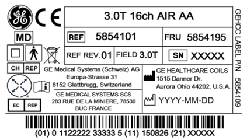

- 00000018WIA30F430B0GYZ
- id_20436631.5
- May 2, 2023, 12:46:03 PM
3.0T 16-channel Adaptive Image Receive (AIR) Anterior Array (AA) coil introduction
The performance of any modifications and/or repairs that have not been evaluated and approved by GE HealthCare Coils Engineering may cause the device to be adulterated within the meaning of section 501(h) of the Food, Drug and Cosmetic Act, 21 U.S.C. § 351(h) and is strictly prohibited.
Specifically, unapproved modifications may impact the safety claims of the device pertaining to the patient/user in relation to shock, biocompatibility, flammability, biological, and thermal regulations. Any changes to materials outside of those within the product's service documentation may be considered adulterated and can be in violation of good manufacturing practice requirements.
Product identification and shipping list

| Part number | Description | Quantity |
|---|---|---|
| 5854101 | 3.0T 16ch Adaptive Image Receive (AIR) Anterior Array (AA) | 1 |
| 5932193-500 | 3.0T 16ch Adaptive Image Receive (AIR) Anterior Array (AA) Operator Manual Packet | 1 |
| 5495812 | Patient Strap, PET/MR Anterior Array (AA) | 4 |
Environmental requirements
Storage Requirements: All coils should be stored in the scan room.
- Dimensions: 70 cm wide x 64 cm long x 1.2 cm high (27.6 inches wide x 25.2 inches long x 0.5 inches high)
- Weight: 3.20 kg (7.0 lbs)